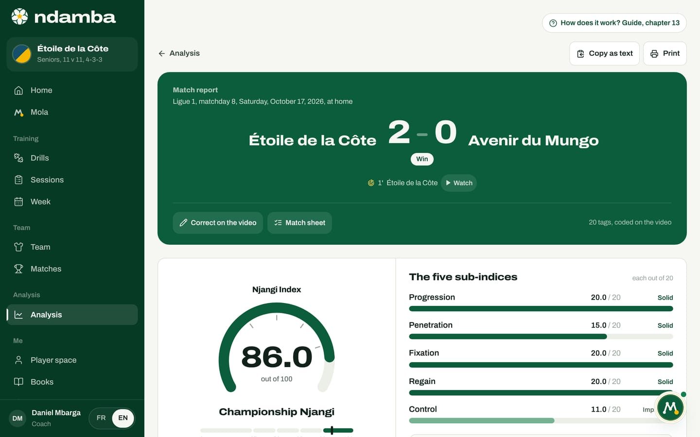
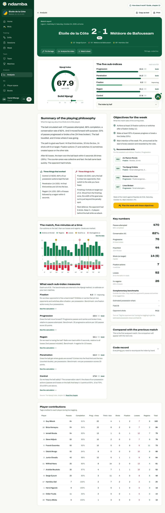
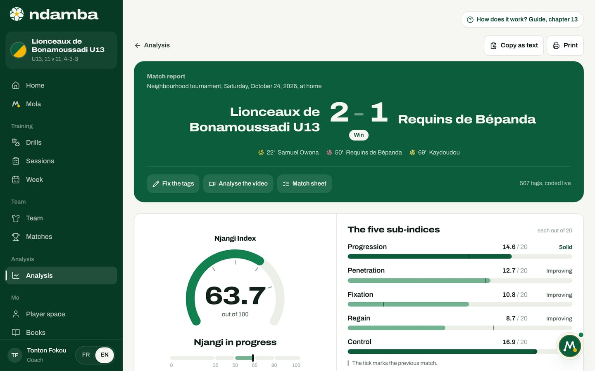
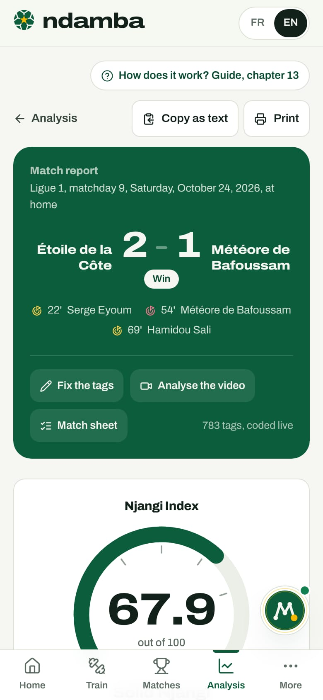

The match report and the Njangi Index
How to read a match report from top to bottom with the real demo numbers: the score, the Njangi Index gauge and its band, the five sub-indices and their levels, the halves, the objectives and drills for the week, then copying, printing and fixing the tags.
11 min read
On the evening of a match, a coach goes home with the score and a feeling. The score does not say how the team played, and the feeling changes with your mood. The match report turns the match codes, placed on its video or live (chapter 12), into a reading that is always built the same way: a score out of 100, the Njangi Index (Indice Njangi in French), which says whether the team possessed with purpose; five sub-indices that say where play moved forward and where it stalled; and the training week that follows from it. This is the heart of what Ndamba promises: one shared measure, the same in a neighbourhood academy and in a national team, so you can tell season after season whether a game model is really improving. This chapter walks through the report from top to bottom using the pro club demo match: Étoile de la Côte against Météore de Bafoussam, 2-1, in Ligue 1, on Saturday 24 October 2026.
Opening a report
Four routes lead to the report:
- In the menu, under Analysis, tap Analysis, then the match in the Analysed matches list (chapter 14).
- In the video studio, the Match report link under the video’s Njangi Index.
- At the end of live tagging, End and see the report opens it straight away.
- Ask Mola Analyse my last match: its summary ends with a Read the full report button.
With no code at all, the page shows No tags for this match yet: "Add the match video and code it: the report fills in with every code. Without a video, code live." It offers Add the match video first, then Live, without video. The report fills in while you code: you can keep it open in another tab and watch it move.
The header: score, goals and actions

At the top, the Analysis link takes you back to the analysis page; on the right sit Copy as text and Print (see below).
The green banner reads Match report, then the competition, the date and the venue: "Ligue 1, matchday 9, Saturday, October 24, 2026, at home". Under the score, a label: Win, Draw or Defeat, or Upcoming and In play for a match that is not finished. The goals follow with their minute (22’ and 69’ for Étoile, 54’ for the opponent), in gold for us and red for them, with the scorer’s name when the goal was credited to a player during live tagging. For a match coded on the video, each goal also carries a small Watch button: it opens the studio a few seconds before the goal, and the video starts.
Below a line, three actions and a counter:
- Fix the tags reopens the live tagger for this match. Its log lets you delete a tag or change the player it is credited to (chapter 12). For a match coded on the video, this button becomes Correct on the video and opens the studio. The report recalculates by itself.
- Analyse the video, for a match coded live, opens the match video or the window to add it. Coding the video will then replace the live coding, after confirmation (chapter 12).
- Match sheet opens the match sheet (chapter 11).
- On the right, the number of codes behind the report and where they come from: 783 tags, coded live, or for example 20 tags, coded on the video. A live coding should be read with more caution: nobody can watch it again.


This last example is a trial on a 24-second demo video: its very high Index means nothing, it only shows the screen. An Index is read over a whole match, coded the same way as the others.
The Njangi Index gauge and its band
Below the header, on the left, the Njangi Index gauge: the number with one decimal (67.9), "out of 100", the name of the band, then a scale in five zones, with thresholds at 35, 50, 65 and 80 and a tick at the exact position of the Index.
| Index | Band shown |
|---|---|
| under 35 | Possession without purpose |
| 35 to under 50 | Fragile purpose |
| 50 to under 65 | Njangi in progress |
| 65 to under 80 | Solid Njangi |
| 80 and above | Championship Njangi |
At 67.9, Étoile is a Solid Njangi, just above 65. When an analysed match comes before this one, a chip under the gauge shows the difference ("+7.7 v Aigles de Logbaba" in the U13 demo). These thresholds come from chapter 32 of The Njangi Code: they are internal benchmarks of the method, to be calibrated on your own matches.
The five sub-indices and their levels
On the right, The five sub-indices, "each out of 20", which add up to the Index. Each one has a bar and a level:
- To build: under 8 out of 20 (red bar);
- Improving: 8 to under 13 (light green bar);
- Solid: 13 and above, the model zone (dark green bar).
The calculation starts from four totals. Here: 470 passes attempted (412 completed, 58 lost); 92 losses in all (the 58 lost passes plus 34 losses on the ball or in duels); 106 possessions, since a possession ends with a loss or a shot (14 shots); and 504 possession actions (passes plus losses on the ball). The five calculations for this match:
| Sub-index | Question | Calculation | Score | Level |
|---|---|---|---|---|
| Progression | Does the ball move forward? | 20 × (76 progressive + 34 lines broken) / (0.35 × 470 passes) | 13.4 | Solid |
| Penetration | Does it get where goals are scored? | 20 × (44 final third entries + 2 × 16 box entries) / 106 possessions | 14.3 | Solid |
| Fixation | Do we draw opponents to free a teammate? | 20 × (7 fixation actions + 4 switches) / (0.25 × 106) | 8.3 | Improving |
| Regain | Do we react to losing the ball? | 20 × 26 regains within 5 s / (0.40 × 92 losses) | 14.1 | Solid |
| Control | Do we keep the ball safely? | K = 412 / 504 = 0.817, then 20 × (K - 0.55) / 0.30 | 17.8 | Solid |
Each score is capped at 20 and rounded to one decimal: 13.4 + 14.3 + 8.3 + 14.1 + 17.8 = 67.9. The reading is immediate: the team keeps the ball, moves it forward, gets into the box and reacts to losing it, but too rarely draws two opponents to free a teammate on the other side. That is the work to do.
Further down, the section What each sub-index measures takes them again from weakest to strongest, with their benchmark ("35 progressive actions per 100 passes score 20 points") and a See the calculation link that shows the formula with the match’s own numbers. Read the chapter opens chapter 32 of the book.
The halves
Under the bars, tap the folded panel The Index by half. It gives each sub-index for the 1st half, the 2nd half and the Match, plus ET 1 and ET 2 if tags were placed in extra time.
| 1st half | 2nd half | Match | |
|---|---|---|---|
| Progression | 12.7 | 14.0 | 13.4 |
| Penetration | 12.4 | 16.5 | 14.3 |
| Fixation | 5.8 | 11.0 | 8.3 |
| Regain | 12.2 | 16.3 | 14.1 |
| Control | 16.8 | 18.8 | 17.8 |
| Index | 59.9 | 76.6 | 67.9 |
Étoile started as Njangi in progress and finished as a Solid Njangi; Fixation nearly doubled after the break. Under the table sits a rule of the method: "The match is computed from summed codes, never from the average of the halves." The average of the two halves would be 68.25; the report shows 67.9, computed from all the codes.
The summary of the playing philosophy
The section Summary of the playing philosophy turns the numbers into sentences. The text is written by fixed rules: the same numbers always give the same sentences. There are three paragraphs (the ball, where play progressed or stalled, the reaction to losing it), and a fourth when a previous match exists. In the demo, the first one reads: "The ball circulated well: 470 passes attempted, 88% completion, a conservation rate of 82%. And it moved forward with purpose: 23% of passes progressed or broke a line (34 lines broken). The ball travelled, and it knew where it was going."
Below come Three things that worked (Control, Penetration, Regain) and Three things to fix (Fixation, finishing with 6 shots on target out of 14, and rest defence after 9 opponent shots). Under 12 tags, the summary warns: "Not enough tags yet to summarise the playing philosophy."
What to train next: objectives and drills
The section Objectives for the week, "What this match asks of the coming week", targets the two weakest sub-indices with a number to reach, then names the main intention. For Étoile:
- "Achieve at least 15 fixation actions or switches after a fixation (today 11)."
- "Make at least 30% of passes progress or break a line (today 23%)."
- "Main intention of the week: Pin, announced at the start of every session and rewarded by the rules."
The intention always follows the weakest sub-index:
| Weakest sub-index | Intention of the week | Method drills for this sub-index |
|---|---|---|
| Progression | Progress | P05, S07, L02, R06 |
| Penetration | Finish | F03, F05, G05, G01 |
| Fixation | Pin | R02, S04, P07, F04 |
| Regain | Win it back | R08, T01, T03, F06 |
| Control | Breathe | R01, R07, P01, P10 |
Under Recommended drills, the report takes the first two drills of each of the two weakest sub-indices: R02 and S04 for Fixation, P05 (Between the Lines) and S07 (Lines Broken) for Progression. Each card opens the drill page (chapter 7).
At the bottom: "Week of the match against Rapides de Kribi, Saturday, October 31. Main intention: Pin.", then the gold button Plan the week with these objectives. It creates the missing MD-4 to MD-1 sessions before that match, built around the intention and marked Mola, without touching existing sessions or days already gone, and it leaves free the day of another match and the day after it (chapter 9), then offers Open the week. On the Free and Player Premium plans, it only creates sessions up to five in all, and leads to the Premium page when that quota is already reached. In the demo the week is already planned, and the report says so: "Nothing to add this week: the remaining days already have their session, or are taken by another match. Open the week to adjust them." With no next match, it first offers New match: the week is planned backwards from match day.
The other sections of the report


- Key numbers: passes attempted and completion, conservation K (82%), progressive actions, final third entries, shots on target, fixation actions, losses, regains within 5 seconds (28% of losses).
- Complementary benchmarks: the Estimated possession share and the Field tilt (our share of final third entries against the opponent’s). They stay empty without the opponent codes (Their pass, Their lost pass, Their final third), always present in the video studio and offered as an option live. Opponent shots shows "9 (1)" here: nine shots, one of them on target, the goal conceded in the 54th minute. There is no "their shot on target" button: an opponent goal counts as a shot on target.
- The match, five minutes at a time: our actions on the ball as bars, then our regains (light green) and losses (red), with goals marked by a dot. Tap a bar for its numbers, or See the data.
- Compared with the previous match: a grey bar for the match before, a green one for this one. Here: "This is the first analysed match: the comparison will appear with the next one."
- Player contributions: the tags credited to each player during live tagging, from passes to regains. The video studio does not credit actions to players yet: this table stays empty for a match coded on the video.
- Code record: the fourteen codes, for us and for the opponent, and the base totals, everything you need to recompute the Index by hand.
For a U15 team or younger, the contributions table carries this reminder: "With young players, the Index measures the team, never a child. Keep this table for the staff and never compare players in front of the group."


In the U13 demo, the Index is 63.7, Njangi in progress. Regain (8.7) is the weakest, then Fixation (10.8): the week will be built around Win it back. The thin tick on each bar marks the previous match.
Copying, printing, reading on a phone
Copy as text puts the report on the clipboard as plain text, ready to paste into the staff WhatsApp group. "Report copied" confirms it. The text starts like this:
Match report, Ndamba
Étoile de la Côte 2 - 1 Météore de Bafoussam
Ligue 1, matchday 9, Saturday, October 24, 2026
Njangi Index: 67.9 / 100 (Solid Njangi)
- Progression: 13.4 / 20
Then come the other sub-indices, the halves, the summary, the drills and the source. If the browser refuses: "Could not copy: select the text by hand."
Print opens the browser’s print window. Menus and buttons disappear, and sections are not split across two pages. Most browsers also offer to save as PDF from there.


On a phone, the whole report fits in one column. After the gauge and the sub-indices come the summary, the objectives for the week and the key numbers first, which is what you read on the touchline or on the bus, then the timeline, the explanations, the comparison, the contributions and the code record.